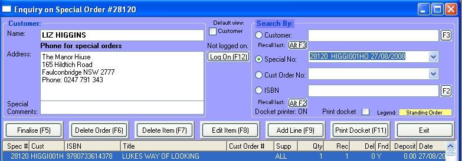

Looking up special orders
You can lookup special orders in four ways:
Enquiry by special order number:
In the Special Order field, type in the order number or click on the down arrow
All the lines on the special order will be displayed in the browser.
Enquiry by customer:
Select a customer in the Customer field in the usual way.
All the special order lines for the customer will be displayed in the browser.
The total outstanding special order quantity for the customer and the total value, at current sell price, of those lines is displayed
Enquiry by customer order number:
In the Cust Order No field, type in the order number or click on the down arrow
All the special order lines for that order will be displayed in the browser.
Enquiry by ISBN:
Type the ISBN into ISBN field.
All the special orders for that ISBN will be displayed in the browser.
Handy shortcut
In Customer Order Number mode and in ISBN mode, double clicking on a the line in the browser will switch to Special Order Number mode with the browser displaying just the details of that special order number.

Special order enquiry window
Browser Display
The browser will display three quantity fields:
Qty The amount ordered.
Rec The quantity that has been received.
Del The quantity that has been invoiced.
Actions
After selecting a special order using the Special Order combo box, you can perform the following actions by clicking the relevant button:
Finalise
If you have sold a special order without either using thee Special Order function in Cash Sales or appending it to an invoice, the special order will still show as waiting to be processed. To correct this, click on the Finalise (F5) button. This will update the Del(ivered) field of the special order.
If there is a deposit outstanding on the special order, you will be given the opportunity to refund it. If you do not wish to, ie customer defaulted, you can set the refund to zreo by overtyping the amount displayed.
Delete Order
Highlight a line of the order in the browser and click on the Delete Order (F6) button.
If there is a deposit outstanding on the special order, you will be given the opportunity to refund it. If you do not wish to, ie customer defaulted, you can set the refund to zreo by overtyping the amount displayed.
Delete Line
Highlight the special order line in the browser and click on the Delete Line (F7) button. If there is a deposit outstanding on the special order, you will be given the opportunity to refund it.
Edit item
Clicking on the Edit Item (F8) button will open the edit window.
Here you can change:
| · | Order comment
|
| · | Quantity received
|
| · | Order Quantity
|
| · | Customer order number
|
| · | EDI and Print flags.
|
In Special Order Number mode and in Customer mode you can access this window by double clicking on a line in the browser.
Adding a deposit
If the customer pays a deposit, you can enter it here. Enter the deposit in the Add to Deposit field. You will be asked to complete tendering details in the Tendering Type window as you would for a normal cash sale.
Add line
Clicking on the Add Line (F8) button will open the Add Line window.
Enter the line details as you would in Special Order Create and then click the OK button.
Print Docket
With the special order line highlighted in the browser, click on the Print Docket (F11) button to reprint a docket.
Context Menu
Displaying title, supplier and customer details
Right click on the window and chose View title master, View supplier master or View customer master from the displayed menu.